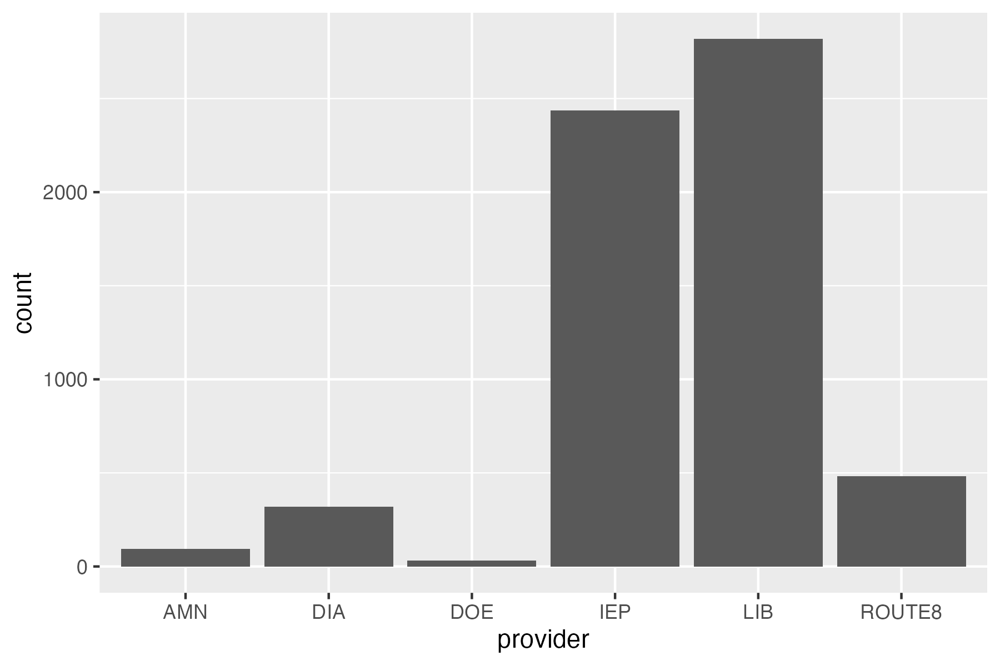
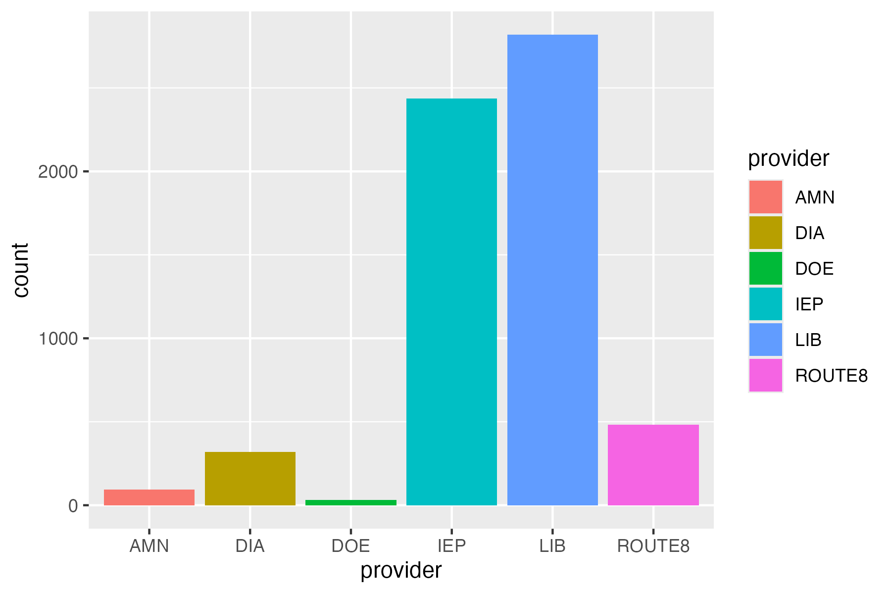
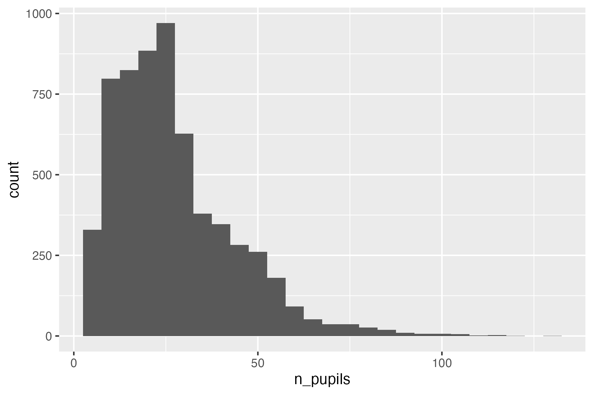
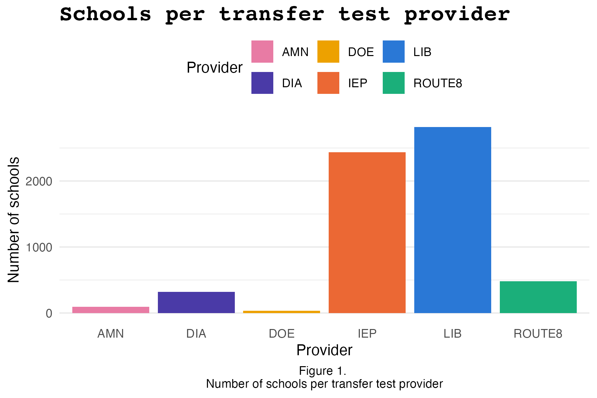
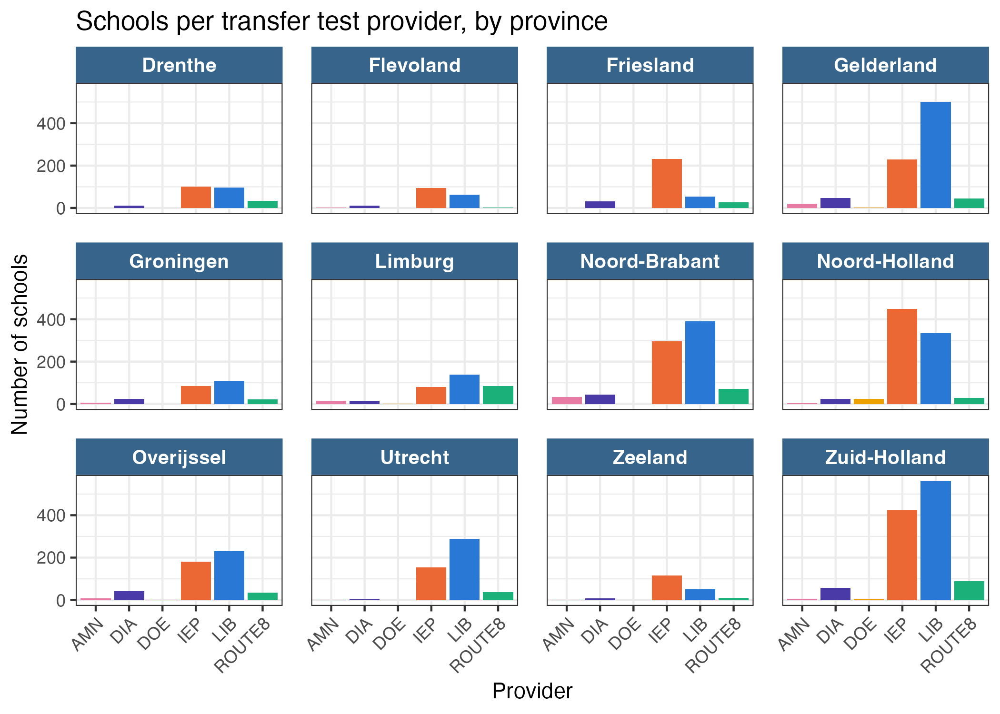
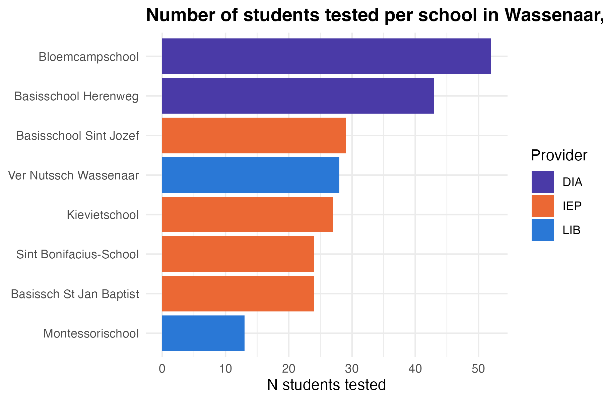

library(tidyverse)
eindscores <- read_delim(
"data/raw/eindscores_2024-2025.csv",
delim = ";", # DUO's files are ;-separated
# NL uses , as decimal point
locale = locale(decimal_mark = ",", encoding = "UTF-8"),
show_col_types = FALSE
)Quickstart: the DUO Data & ggplot Basics
Note
This worksheet is meant to get you started with the DUO data you’ll be working with throughout this module. Use the worksheet to get acquainted with the data, and refresh your ggplot skills. Solutions are already provided.
Setup
This module uses DUO’s open onderwijsdata. This data is public, from the Dutch government. The necessary code to load in the data is available in the github repository:
- Download this course’s GitHub repository: go to github.com/ann1ejohansson/data-visualization-2026, click the green Code button, and choose Download ZIP (no git needed — if you’re already comfortable with git, cloning works too). Unzip it and open
data-visualization-2026.Rprojin RStudio.
- You’ll need the folders
data/andtemplates/. Copy these into your own, local folder to work in.
- The script you need to load in the data is
data/get-data.R. Run it once — it downloads four DUO source files intodata/raw/. Skim the comments at the top of that script first; they explain what each file is and why it’s there.
- Read the background information and codebook for the data here.
Part 1 — Load and inspect the data
We’ll focus on one of those four files, eindscores. This shows the average transfer test score per primary school, broken down by which of the six test providers (IEP, Route8, DIA, AMN, DOE, LIB) that school used.
Run glimpse(eindscores) yourself and notice the shape: one row per school, with a separate pair of columns per provider — IEP_AANTAL/IEP_GEM, ROUTE8_AANTAL/ROUTE8_GEM, and so on (AANTAL = number of students tested, GEM = their average score). Most schools use exactly one provider, so five of those six AANTAL columns will be 0 for any given row.
Part 2 — Tidy it
To plot “which provider did each school use,” we need one provider column instead of six. pivot_longer() does this by taking a set of columns and stacking them into rows: it moves each column’s name into one new column (names_to) and each column’s value into another new column (values_to). You tell it which columns to stack with cols = — here, the six *_AANTAL columns.
school_provider <- eindscores |>
# keep just the ID/label columns, plus the six *_AANTAL columns
select(
INSTELLINGSCODE, VESTIGINGSCODE, INSTELLINGSNAAM_VESTIGING,
GEMEENTENAAM, PROVINCIE, SOORT_PO, ends_with("_AANTAL")
) |>
# stack the six AANTAL columns into two: which provider, how many students
pivot_longer(
cols = ends_with("_AANTAL"),
names_to = "provider",
values_to = "n_students"
) |>
mutate(
provider = sub("_AANTAL$", "", provider), # e.g. IEP_AANTAL becomes IEP
# DUO writes "<5" instead of an exact count when it's under 5 (privacy
# rule) - as.numeric() turns those into NA, which we then drop below
n_students = as.numeric(n_students)
) |>
# drop unused/suppressed providers
filter(!is.na(n_students), n_students > 0) |>
group_by(INSTELLINGSCODE, VESTIGINGSCODE) |>
# handles rare mixed-provider schools
slice_max(n_students, n = 1, with_ties = FALSE) |>
ungroup()school_provider now has one row per school: its name, municipality, and which single provider it used. This is the shape ggplot2 wants.
Part 3 — ggplot basics
Every ggplot2 plot answers three questions: what data, which variables map to which visual properties (aes()), and what shape represents each observation (a geom, added with +).
ggplot(data = <DATASET>, mapping = aes(<AESTHETIC MAPPINGS>)) +
geom_<SOMETHING>()Exercise 1 — Your first plot
geom_bar() counts rows for you automatically — perfect for “how many schools use each provider?”
ggplot(school_provider, aes(x = ____)) +
geom_____()
ggplot(school_provider, aes(x = provider)) +
geom_bar()Exercise 2 — Mapping vs. setting
An aesthetic mapped to a variable goes inside aes() and varies per observation; an aesthetic just set to a fixed value goes outside aes(). Fix the mistake below (it’s trying to make every bar steelblue, but puts the color where a mapping would go), then extend it to map fill to provider instead.
ggplot(school_provider, aes(x = provider, fill = "steelblue")) +
geom_bar()
# fix: "steelblue" must be set, not mapped
ggplot(school_provider, aes(x = provider)) +
geom_bar(fill = "steelblue")
# extended: fill mapped to a variable instead
ggplot(school_provider, aes(x = provider, fill = provider)) +
geom_bar()Picking a geom for the question you’re asking
| Question | Reach for |
|---|---|
| How do two continuous variables relate? | geom_point() |
| How does a value compare across categories? | geom_col() / geom_bar()* |
| How is a continuous variable distributed? | geom_histogram() |
| How does a distribution differ across groups? | geom_boxplot() |
*geom_bar() counts rows for you; geom_col() expects you to already have a column of heights to plot (like n_students).
Exercise 3 — A different geom
Plot the distribution of n_students across all schools with a histogram.
ggplot(school_provider, aes(x = ____)) +
geom_____()
ggplot(school_provider, aes(x = n_students)) +
geom_histogram(binwidth = 5)Labels, themes, colors
labs()controls text: title, axis titles, legend title.
scale_fill_manual()/scale_color_manual()control colors: here, I show you how to map specific values to specific colors with a named vector. You can also do this with pre-defined color scaling, with functions such asscale_fill_viridis()(try it withscale_fill_viridis_d()!)theme_*()controls overall look:theme_minimal(),theme_bw(), etc.- Inside
theme()you can also tweak your own styling. I’ve added a few common features in the code below.
# one fixed color per provider, so it stays the same across every plot you make
provider_colors <- c(
LIB = "#2a78d6", IEP = "#eb6834", ROUTE8 = "#1baf7a",
DIA = "#4a3aa7", AMN = "#e87ba4", DOE = "#eda100"
)
ggplot(school_provider, aes(x = provider, fill = provider)) +
geom_bar() +
scale_fill_manual(values = provider_colors) +
labs(
title = "Schools per transfer test provider",
x = "Provider",
y = "Number of schools",
fill = "Provider",
caption = "Figure 1. \nNumber of schools per transfer test provider"
) +
theme_minimal() +
theme(
# ggplot right-aligns captions by default - this centers it
plot.caption = element_text(hjust = 0.5),
# change font sizes and family with the element_text() argument
plot.title = element_text(size = 16, face = "bold", family = "courier"),
legend.position = "top", # use legend.postion = "none" to remove the legend
panel.grid.major.x = element_blank()
) # remove grid lines in background
Facets
facet_wrap()splits one plot into a panel per category of a variable — instead of cramming every group into one plot with color, you get a small multiple per group, each with its own axes.facet_grid()does something similar, but arranges panels into a fixed grid (rows × columns) instead of wrapping them into however many rows/columns fit.- Once each panel is already labeled by the variable, a color legend for that same variable is redundant —
theme(legend.position = "none")drops it. - The facet labels themselves (the little strip above each panel) are also styled through
theme():strip.textfor the label text,strip.backgroundfor the strip behind it, andpanel.spacingfor the gap between panels. For an easy option, usingtheme_bw()already styles facets nicely.
ggplot(school_provider, aes(x = provider, fill = provider)) +
geom_bar() +
# the same named vector from above
scale_fill_manual(values = provider_colors) +
# use scales = "free_x", "free_y, or "free" to rescale the axis per facet
facet_wrap(~PROVINCIE) +
labs(
x = "Provider", y = "Number of schools",
title = "Schools per transfer test provider, by province"
) +
# theme_bw() already styles facets nicely, in my opinion. but see options in
# theme() below for how to customize it yourself!
theme_bw() +
theme(
legend.position = "none",
axis.text.x = element_text(angle = 45, hjust = 1),
# facet label text
strip.text = element_text(face = "bold", size = 10, color = "white"),
# facet label background
strip.background = element_rect(fill = "steelblue4", color = NA),
panel.spacing = unit(1, "lines")
) # space between panels
Part 4 — Put it together
Now make your own plot. Plot the number of students per school, colored by the provider that school used. To keep it readable, plot this for one municipality (e.g., “Wassenaar”).
* School variable is INSTELLINGSNAAM_VESTIGING. * Order the x axis by amount of students, so that we see the schools from largest to smallest.
* Flip the axes, so that bars lay horizontally (tip: coord_flip).
* Change the colors and theme.
* Title should be boldface. Code the title such that if the municipality changes, the title also changes.
school_provider |>
filter(GEMEENTENAAM == "Wassenaar") |>
ggplot()e.g., for Wassenaar:

municipality <- "Wassenaar"
school_provider |>
filter(GEMEENTENAAM == municipality) |>
# filter(n_students > 50) |> # use this filter if plots get crowded with large
# municipalities
ggplot(aes(
x = reorder(INSTELLINGSNAAM_VESTIGING, n_students),
y = n_students,
fill = provider
)) +
geom_col() +
# the same named vector from above
scale_fill_manual(values = provider_colors) +
coord_flip() + # horizontal bars so school names stay legible
labs(
# updates with municipality
title = paste0(
"Number of students tested per school in ",
municipality,
", by provider"
),
x = NULL, y = "N students tested", fill = "Provider"
) +
theme_minimal() +
theme(plot.title = element_text(face = "bold"))Swap "Wassenaar" for another municipality of interest. Some are large enough that the bar chart gets crowded — if that happens, try facet_wrap(~ provider) instead of fill.
Tip
Save any plot with ggsave("path-to-your-plot/filename.png", width = 6, height = 4, dpi = 300). Change width and height to match your desired dimensions.
More practice
- Kieran Healy, Data Visualization: A Practical Introduction, ch. 3
- Kieran Healy, Data Visualization: A Practical Introduction, ch. 8
- OSU Code Club’s ggplot series: part 1, part 2, part 3
- A curated list of all ggplot packages, tutorials, etc.
- ggplot cheatsheet